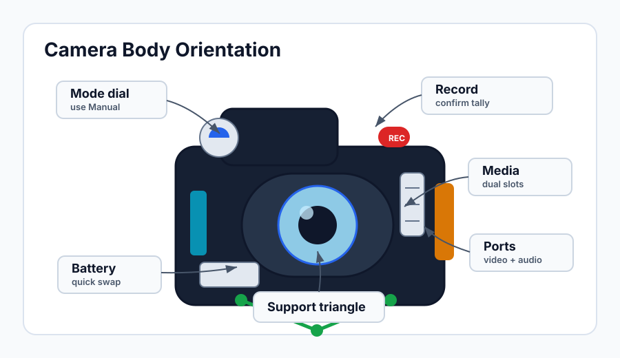

Camera Body Orientation
Learning Objectives
- Identify and locate the essential controls on a professional video camera body.
- Complete a proper camera setup workflow from battery insertion to first recording.
- Understand why formatting media cards in-camera matters for reliability.
- Navigate camera menus confidently and configure custom buttons.
- Handle the camera correctly to reduce fatigue and accidental button presses.
Getting to Know the Body
Before you worry about exposure or focus, you need to know where everything lives. A professional video camera has dozens of buttons, dials, and ports — and in the middle of a shoot you cannot afford to hunt for the record button. The goal of this lesson is to make the hardware feel familiar so that operating becomes second nature.
Every camera is slightly different, but the layout follows a consistent logic. Controls that you reach for frequently — record, exposure, zoom — are placed where your hands naturally rest. Controls you set once at the beginning of the day live deeper in menus. Understanding this logic will help you find your way around any camera you pick up, not just the one you trained on.

The Critical Controls
Record Button
The record button is almost always on the top-right of the body where your right thumb or index finger sits. Many cameras also place a secondary record button on the front grip — a convenience when shooting in unconventional positions. Learn both. Before every shoot, press record deliberately, watch the recording indicator (usually a red dot or tally light), and confirm the camera is actually rolling. Beginners frequently miss shots because they thought they hit record but did not.
Mode Dial
Most mirrorless and DSLR-style cameras have a mode dial that switches between Auto, Program, Aperture Priority (Av), Shutter Priority (Tv), and Manual (M). For video production, you will almost always work in Manual mode. This gives you complete control over aperture, shutter speed, and ISO independently. Leaving the camera in any automatic mode means the exposure can shift mid-shot, which is rarely acceptable in professional work.
Media Card Slots
Most professional cameras have two card slots accessible through a door on the side or bottom of the body. Know which slot is primary and which is secondary. Many cameras let you configure dual recording — recording to both cards simultaneously for redundancy, or recording overflow to the second card when the first fills up. Redundancy recording is worth enabling whenever you are capturing irreplaceable footage.
Always check that the card is fully seated and the door is properly latched before you start shooting. A partially inserted card can cause recording failures with no warning until you try to play back the footage later.
Battery Compartment
The battery typically slides into the bottom or back of the camera body. Know how to release it quickly — on a long shoot you may need to swap batteries under time pressure. Keep at least two fully charged batteries on every shoot and carry a charger. A dead battery is the most preventable gear failure in video production.
Ports and Connections
Professional cameras include several important ports. The HDMI or SDI output sends a video signal to an external monitor or recorder — useful when you need a larger image to check focus. The USB-C or micro-USB port is used for charging, tethered control, or transferring settings. The 3.5mm audio input (or, on higher-end cameras, XLR inputs) connects a microphone or audio recorder. The headphone jack lets you monitor audio live while recording. Know which ports you will use on a given shoot and connect any cables before you begin — not while the camera is rolling.
The Setup Workflow
Every time you pick up a camera for a shoot, run through the same sequence. Making this a habit eliminates the most common preventable errors.
Step 1 — Insert the battery. Make sure it is charged. When possible, use a battery that was charged the night before rather than one sitting on a shelf for a month.
Step 2 — Insert the media card. Use a card you know is working. Cheap or counterfeit cards are a leading cause of recording failures. Stick to reputable brands in the speeds specified by your camera's manual.
Step 3 — Format the card in-camera. Go to the menu and format the media card every time before a new shoot. This is not the same as deleting files on a computer. In-camera formatting writes the correct file system structure for that specific camera, which prevents recording errors, dropped frames, and corrupted files. It also clears any leftover data that could cause confusion.
Format in-camera, not on a computer. Computer formatting uses a generic file system that may be technically correct but is not optimized for the camera's recording requirements. Some cameras will warn you or refuse to record on a card that was not formatted in-camera.
Step 4 — Set the date and time. This matters for file naming and for sorting footage chronologically in post-production. If you collaborate with other operators or mix footage from multiple cameras, incorrect timestamps will make your editor's life miserable.
Step 5 — Check the firmware version. Camera manufacturers release firmware updates that fix bugs, improve autofocus, and sometimes add entirely new features. Check the manufacturer's website periodically and update when a new version is available. You can find the current firmware version in the Setup or System menu.
Step 6 — Verify your settings. Check frame rate, resolution, picture profile, and audio levels before you roll. Never assume the camera is configured the way you left it — settings can be reset by a firmware update, a full battery drain, or a colleague who borrowed the camera.
Navigating Menus
Camera menus are deep and often unintuitive. The best approach is to find the settings you use daily and memorize their location — or better, assign them to custom buttons so you never have to enter the menu at all.
Most professional cameras allow you to assign frequently used functions to programmable buttons. Common assignments include ISO, white balance, focus mode, and peaking display. Spend time in the custom button settings and map the controls to match your workflow. When you pick up the camera and need to change ISO quickly, you should be able to do it without taking your eye off the viewfinder.
Write down your custom button configuration and keep it with the camera or in your phone's notes. When you work with a camera you have not used in a while, a quick glance at your notes will restore your muscle memory faster than hunting through menus.
Physical Handling
How you hold and carry the camera affects both the safety of the equipment and the quality of your shots. The camera body should always be supported from below, not gripped by the lens. When walking, use the camera strap and keep the body close to your torso. When shooting handheld, your right hand grips the body with your index finger over the shutter/record area, and your left hand cradles the lens from below. Keep your elbows tucked in against your ribs — this creates a triangle of support that dramatically reduces camera shake.
Be deliberate about which buttons your hands rest near. Many beginners accidentally press the ISO button, the mode dial, or the drive mode selector while shooting and do not notice until they review the footage. Learn where the accidental-press hazards are on your specific camera and stay conscious of your grip.
Why should you format a media card in-camera rather than on a computer?
Which camera mode should you almost always use for professional video production?
Key Takeaways
- Know your camera's layout by feel — record button, mode dial, card slots, battery, and ports should all be second nature before you step on set.
- Always run a setup workflow: battery, card, format in-camera, date/time, firmware check, settings verification.
- Format cards in-camera every time to prevent recording failures — do not rely on computer formatting.
- Assign frequently used settings to custom buttons to keep your workflow fast and your eye on the subject.
- Proper physical handling protects the equipment and reduces camera shake in your footage.